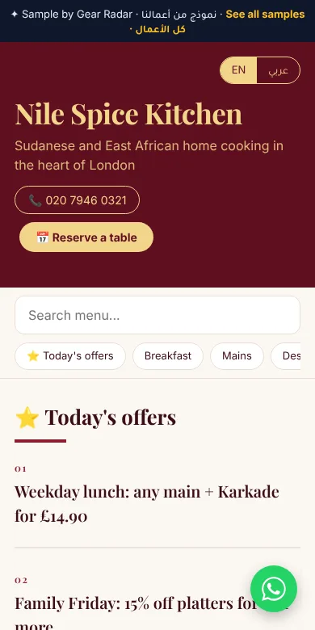
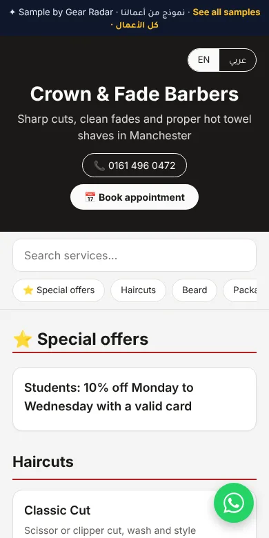

Walk into almost any café or restaurant in the UK and you will find a QR code on the table. Scan it, though, and too often you get a heavy PDF that takes ages to load, then a menu so small you have to pinch and zoom just to read the prices. Your customers notice, and so does your till.
A smart QR menu fixes that. It is a proper mobile page, built for phones, that opens instantly and that you can update yourself in seconds. Here is why more UK restaurants are making the switch, and how you can do it this week.
The hidden cost of paper and PDF menus
Reprinting every time something changes
Food costs move, suppliers change and dishes come and go. With printed menus, every price rise means another print run. Many owners end up crossing prices out by hand or living with an out-of-date menu, which looks worse than either option.
A poor experience on the phone
A PDF is a printed page squeezed onto a small screen. It can be several megabytes, so it loads slowly on patchy mobile data, and customers have to zoom and scroll sideways to find what they want. Some give up and wait for a member of staff instead, which slows service on your busiest nights.
Lost sales because nobody can order
A PDF can only be read. There is no way to tap a dish, add it to a basket or send an order. Every customer who has to wave someone over to order is a slower table turn, and a takeaway customer who cannot order quickly may simply call somewhere else.
What makes a smart QR menu different?
| PDF menu | Smart QR menu | |
|---|---|---|
| Opens on a phone | Slow download, then zoom | Instantly, sized for the screen |
| Changing a price | Edit the file and upload again, or reprint | Change it yourself in seconds |
| Sold out dishes | Stay on the menu | Marked as unavailable |
| Ordering | Not possible | From the table or on WhatsApp |
| Photos and search | Rarely | Dish photos, categories and live search |
Opens straight away, no app needed
Customers point their camera at the code and the menu opens in their browser. There is nothing to download and nothing to sign up for. Categories, dish photos and clear prices make it easy to browse with one thumb.
Update prices and dishes whenever you like
Change a price, add a daily special or mark a dish as sold out, and it shows the next time someone scans. The QR code on your tables never changes, so you print it once and keep it.
Orders from the table or on WhatsApp
With ordering switched on, customers add dishes to a basket and send the order with their table number. It goes to a live orders screen in your kitchen, or to your WhatsApp if you prefer. Takeaway customers can order or book on WhatsApp in a couple of taps.


See more designs in the MenuTap gallery.
How to set up MenuTap
MenuTap is the smart QR menu from Gear Radar, made for UK cafés, restaurants, takeaways and shops. Setting it up is simple:
- Pick a plan and send us your menu. A photo of your current menu, a PDF or a list is fine. Add your logo and dish photos if you have them.
- We design it in your style. Choose a theme and layout that matches your brand, from our gallery.
- Get your QR code and table cards. You receive your QR code and a printable table card, ready for every table. It is usually ready within a few days.
Launch prices, paid once
QR Starter
Menu page in one language, QR code and printable table card, change prices any time with your edit code.
Get startedQR Pro
Adds your logo and dish photos, ordering from the table or on WhatsApp, Arabic and English, and live search.
Get startedQR Premium
Everything in QR Pro, with all 10 themes and all 10 layouts, including Magazine and Bento.
Get startedThere is no contract. If you would rather we keep your menu up to date for you, monthly menu updates are an optional extra at £9 a month (launch price, regular £18, locked for 12 months), covering up to 4 updates a month. Prices are charged in GBP. Need a website too? Our Duo bundle gives you a website and a QR menu together from £35.
Questions restaurant owners ask
Do customers need an app to use a QR menu?
No. Customers scan the QR code with their phone camera and the menu opens in their browser straight away. There is nothing to download.
How much does a QR menu cost with MenuTap?
MenuTap starts at £30, paid once, for QR Starter. QR Pro is £50 and QR Premium is £70. These are launch prices, 50% off until 31 January 2027. Monthly menu updates are an optional extra at £9 a month.
Can customers order from the table?
Yes, on QR Pro and QR Premium. Customers add dishes to a basket and send the order with their table number, either to a live orders screen in your kitchen or to your WhatsApp.
Can I change prices myself?
Yes. Every plan comes with an edit code so you can change prices, mark a dish as unavailable or add a daily offer, and the change shows the next time someone scans. You never reprint the QR code.
How long does it take to set up?
Your QR menu is usually ready within a few days of us receiving your menu and details.